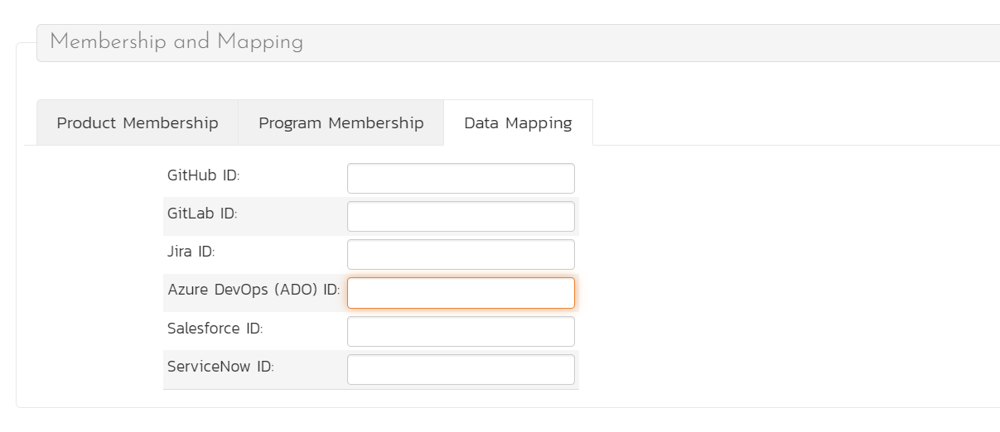
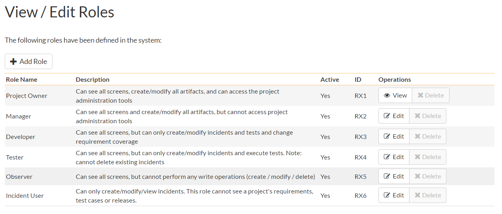

System: Users
View / Edit Users
The following screen is displayed when you choose the "View/Edit Users" link from the Administration menu:

This screen displays the list of users in the system (both inactive and active) together with their first name, middle initial, last name, username (login), administrative permission status and active status.
You can filter the list of users by either choosing an administrative / active status, or entering a portion of the first name, middle initial, last name or username into the appropriate text box. When you click the "Filter" button, the list of users will be filtered by the criteria you entered. You can clear the filter selection by clicking the "Clear Filters" button. To sort the list of users, just click on the appropriate arrow icon located in the header row of each field (one each for ascending / descending). In addition, the list of users is paginated into groups of fifteen (15). You can step through the different pages by clicking the page numbers at the bottom of the user list.
To add a new user to the system, click the "Add" button at the bottom of the user list, and a new screen will be displayed that allows you to enter the new user information:

On this screen, you can enter information about the user, such as their name, email address, and department. You can also create their password, password reset question and answer. If you want the user to be able to subscribe to items in the system as RSS feeds, you should also make sure that the "Enable RSS Feeds" checkbox is selected and a GUID token is displayed in the text-box underneath.
When creating a new user, you can also set their role for products. A user can be assigned a role to multiple products at once, by checking the required checkboxes in the dropdown list of products. The same role will be applied across all products.
Note: If you make a user a System Administrator, it will force that user to always have the 'Product Owner' role on all their assigned products, regardless of the chosen role. If you disable this option, they will then revert back to their true role.
In a similar way, to edit the details of an existing user, click the "Edit" hyperlink in the user list box, and you will be taken to the following screen that allows you modify the user details:

On this screen you can edit the first name, middle initial, last name, username, email address, system administration status and active status. You can also change the user's password (if the user is managed by SpiraPlan) or LDAP information (if managed by an external LDAP directory server). In LDAP-Managed mode you enter the fully Distinguished Name (DN) for that user in your corporate LDAP server and provide no password. SpiraPlan will then query your corporate LDAP server for the password information, reducing the number of passwords that a user needs to remember. Please see the sections on "Importing LDAP Users" and "LDAP Configuration" for more details.
Once you have made the necessary changes, click the "Save" button to commit them. If you decide that you want to ignore the changes, click the "Cancel" button and the changes will be discarded.
At the top of the page you can also see information relating to the activity of the user on the system, such as when they last logged in.
In addition, there are three tabs that allow you to add/remove the user from products, update the data-mapping used when synchronizing artifacts that are assigned or created by the current user, and, where relevant, specify whether the user can access the linked TaraVault source code management service.
If you click on the "Product Membership" tab you will be shown a list of products that the user is currently a member of:

You can change the role that the user has on the various products, by choosing the appropriate role from the drop-down list and then clicking [Save]. To remove the user from a product, select its checkbox and then click [Delete]. To add a user to a new product, click on the [Add] button and then choose the product and associated role from the list of products on the screen that is displayed:
Then click [Add] to add the selected product(s) to the user's product membership.
To view/change the list of usernames that a user has in an external bug-tracking system, click on the "Data Mapping" tab. This section is used by the SpiraPlan data-synchronization service to map incidents from SpiraPlan to other bug-tracking systems

Please see the SpiraPlan External Bug-Tracking Integration Guide for more details on using the data-mapping tab.
If you click on the TaraVault membership tab, you can choose whether or not the user has access the linked TaraVault source code repository. This service is only available for hosted/cloud instances of SpiraPlan, and more details can be found in LDAP Configuration.
Importing LDAP Users
If your organization already has an LDAP compatible user management system in place (e.g. Windows Active Directory, Novell eDirectory, OpenLDAP, IBM Tivoli, etc.), then instead of having to manually enter users one by one into SpiraPlan, you can simply import them from your LDAP Server. Before doing this however, you need to first setup the LDAP configuration (see the section on LDAP Configuration below.
Once you have setup your LDAP server configuration in SpiraPlan, clicking on the "Import Users From and LDAP Server" will bring up the following screen:

This screen lists all the users available in the LDAP server that have not been already imported into SpiraPlan. The users are listed by name along with their login, email address and fully distinguished LDAP name (DN). You can narrow down the list by entering partial name matches in any of the fields displayed and clicking [Filter] and/or you can sort the results by clicking on the directional arrows in the field headings.
Select the checkbox of any users you want to import and click "Import" to complete the operation. These users can now login to SpiraPlan and use their existing LDAP login and password information.
Active Sessions
Often an administrator of the system will want to know how many users are currently logged into the system, especially on installations licensed by concurrent-user. Clicking on the 'Active User Sessions' administration option will display a list of all the users who currently have active sessions in the system:

Each user is displayed along with their user ID, whether they're connected through the application or via a third-party add-on, and the date they last logged-in. The administrator is able to forcibly end a user's session using the 'End Session' link to the right of their name. Clicking this link will result in that user being logged out when they try and perform an operation in the system. Warning: You should make sure that the user is not actively using the system to prevent any unsaved data being lost.
Pending Requests
If you have enabled the ability for users to register for new SpiraPlan accounts themselves, clicking on the "Pending Requests" administration option allows you to view a list of all the outstanding requests for new user accounts:

For each pending user request you can choose to either Approve or Deny the request:
Approve -- clicking this option will approve the user. They will get an email letting them know that they have been approved and can now log into the system.
Delete -- clicking this option will delete the pending user request from the system.
View / Edit Roles
There are six (6) default product roles that a user may be assigned to a product with:
Product Owner -- the same rights as a Manager, but in addition can access the product administration tools
Manager -- can see all screens and add/edit all artifacts, but cannot access product administration tools
Developer -- can see all screens, but can only add/edit incidents, tasks and tests and change requirement coverage
Tester -- can see all screens, but can only add/edit incidents and execute tests. Note: cannot delete incidents, only a Manager can do that.
Observer -- can see all screens, but cannot perform any write operations (insert / update / delete)
Incident User -- can only view and edit incidents. This user cannot even see the product's requirements, tasks, test cases or releases.
Note: The System Administrator (with a user id of 1) is automatically added to every product as a Product Owner, and can never be removed as Product Owner, made inactive or made a different role on the product.
You can make changes to the permissions associated with each of these default roles, and also create as many additional roles as you like. To customize the roles in your installation of SpiraPlan, click on the "View / Edit Roles" link in the Administration menu:

The screen lists all of the roles currently configured in the system (both active and inactive) together with the name, description, and an active flag. You can create new roles by clicking the "Add" button which will create a new default role entry in the list. You can edit the name, description and associated permissions of a role by clicking on the appropriate "Edit" button. You can delete an existing role, by clicking the "Delete" button. Note that you cannot delete any of the default roles, but can instead make them inactive.
Clicking on the edit button will take you to the following screen:

On the top of the screen, you can edit the name, description, product admin, limited view and active flags:
Product Admin -- this flag denotes whether this role has administration-level access to the product (for example the product owner role has this set by default)
Template Admin -- this flag denotes whether this role has administration-level access to the template that controls this product. You can be a product admin, without also being a template admin. However, you cannot be a template admin, without also being a product admin.
Limited View -- this flag denotes that the role has a restricted view of the product, with the user only allowed to see the artifacts that they have either created or been assigned
Active -- This flag denotes if the role is active in the system
Underneath you can specify the various artifact-specific permissions for the role:

These permission options allow you to specify if a user can create, modify, delete or view each of the artifacts in the system. If a user does not have view permissions for the artifact, then the corresponding tab in the system will also be disabled. There are three kinds of Modify permission available:
Modify All -- this option specifies that the user can modify all the artifacts of this type in the product (e.g. the user can edit all test cases)
Modify Owned -- this option specifies that the user can modify only the artifacts in the product that were either created or assigned to this user (e.g. the user can edit only the requirements they created or have been assigned)
Bulk Edit -- this option means that the user can modify items on the artifact list pages and on the various planning boards. This means the user can bypass the workflow restrictions on changing status and the need to enter required fields and electronic signatures. This should be disabled in a system that is being used for a regulated product that requires electronic signatures.
Note: The permission needed to execute a test case is the "Create + Test Run" permission since that initiates the creation of a new test run.
In addition, there are some artifact-wide permissions that can be specified for each role:

This section lets you specify if the role allows users to add new documents to the product, edit existing documents, delete documents, edit the document folders, and view/edit source code revisions.